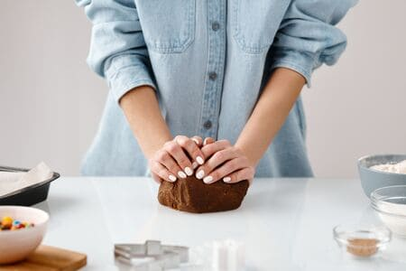
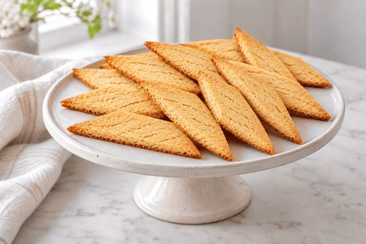
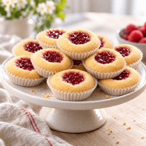
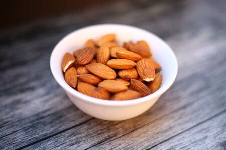
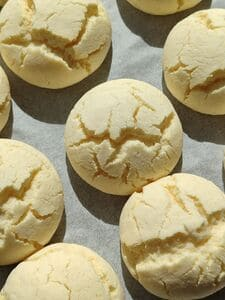
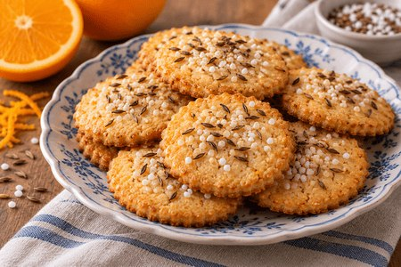
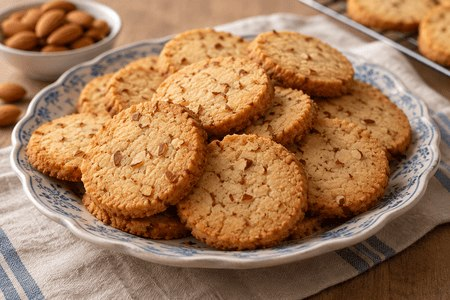

Att bjuda på sju sorters kakor är en klassisk svensk fikatradition och
syftar på det minsta antalet kaksorter som etiketten tidigare föreskrev
att kakfatet ska innehålla. Tanken är att erbjuda ett varierat urval av
småkakor så att det finns något för olika smaker: spröda, mjuka,
chokladiga, kryddiga och fruktiga kakor. Utöver småkakorna serveras även
vetebröd och tårta. Traditionen förknippas ofta med kafferep och
högtider men passar lika bra till vardagsfika eller kalas och har
funnits sedan 1800-talet.
På den här sidan finns recept på sju småkakor att prova på!
Schackrutor

Den här bilden är från Pexels
Ca 50 kakor
Schackrutor är klassiska småkakor med ett dekorativt rutmönster av
ljus och chokladsmakande mördeg. Kakorna blir spröda och ser mycket
läckra ut på kakfatet. De imponerar med sitt utseende men är väldigt
enkla att baka.
Ingredienser
200 g osaltat smör
1 dl strösocker
4,5 dl vetemjöl
Ljus deg: 2 tsk vaniljsocker
Mörk deg: 2 msk kakao
Gör så här:
Ta fram smöret så att det hinner bli rumsvarmt.
Vispa ihop smör och socker till en jämn smet.
Tillsätt vetemjöl, lite i taget, och fortsätt röra tills det blir
stora smulor.
Dela degen i två lika stora delar.
Arbeta in kakaon i den ena delen och vaniljsocker i den andra så att
du får en ljus och en mörk deg.
Dela degarna i två delar så du får två ljusa och två mörka delar.
Rulla ut till längder och tryck till dem mot bakbordet så längderna
får platta kanter. Lägg dem tätt ihop, med två ovanpå de andra så de
bildar ett litet schackmönster.
Låt vila i kylen 1-2 timmar.
Sätt ugnen på 200 °C.
Ta fram längden och skär ca 3-4 mm tjocka skivor.
Lägg kakorna på en plåt med bakplåtspapper och grädda mitt i ugnen i
ca 8-10 minuter.
Kolasnittar

Den här bilden är AI-genererad
20 kakor
Kolasnittar är avlånga lite sega småkakor med smak av sirap och
vanilj. De skärs i sneda bitar direkt när de kommer ut ur ugnen.
Ingredienser
100 g smör
1 dl strösocker
2 msk mörk sirap
2,5 dl vetemjöl
1 tsk bakpulver
1 tsk vaniljsocker
Gör så här:
Sätt ugnen på 175 °C.
Rör smör, socker och sirap mjukt.
Blanda vetemjöl, bakpulver och vaniljsocker. Arbeta sedan ihop med
smörsmeten till en deg.
Dela degen i två delar och rulla dem till längder ca 40 cm långa.
Lägg längderna på en plåt med bakplåtspapper och platta till dem.
Grädda mitt i ugnen cirka 12 minuter.
Låt kakorna svalna något och skär längderna i sneda bitar medan de
fortfarande är varma.
Hallongrottor

Den här bilden är AI-genererad
20-24 kakor
Hallongrottor är mördegskakor med en liten grop fylld med ljuvlig
hallonsylt. De är både enkla att baka och uppskattade på kakfatet.
Ingredienser
200 g smör eller margarin
1 dl strösocker
2 tsk vaniljsocker
4,5 dl vetemjöl
1 tsk bakpulver
1 dl fast hallonsylt
Gör så här:
Sätt ugnen på 200 °C.
Arbeta snabbt ihop smör, socker, vaniljsocker, vetemjöl och
bakpulver till en deg. Gärna i matberedare.
Rulla degen till små bollar och lägg dem i små kakformar ca 5 cm i
diameter.
Gör en grop i varje kaka med ett finger eller skaftet på en sked.
Fyll groparna med hallonsylt.
Grädda i cirka 12–15 minuter och låt sedan svalna på galler.
Finska pinnar

Den här bilden är från Pexels
Ca 60 kakor
Finska pinnar är spröda mördegskakor med mandel och pärlsocker på
toppen. Trots namnet är de en välkänd klassiker på svenska kakfat.
Ingredienser
200 g smör
1 dl strösocker
4,5 dl vetemjöl
1 tsk vaniljsocker
1 dl mandelmjöl
1 äggvita
Garnering
Ca 1 dl hackad sötmandel och 2 msk pärlsocker
Gör så här:
Sätt ugnen på 175 °C.
Blanda mandel, mjöl och socker och arbeta ihop med tärnat smör till
en deg. Låt vila i kylskåp ca 30 minuter.
Dela degen i 8 delar och rulla varje del till en 30 cm lång längd.
Lägg längderna på en plåt med bakplåtspapper.
Vispa upp äggvitan lätt och pensla längderna.
Strö över hackad mandel och pärlsocker och dela längderna i ca 4 cm
långa bitar. Sära bitarna lite så att de inte fastnar i varandra.
Grädda mitt i ugnen i cirka 10-12 minuter.
Drömmar

Den här bilden är från Pexels
40-45 kakor
Drömmar är mycket spröda småkakor med mild vaniljsmak som är lätta att
baka. Hjorthornssalt gör att kakorna får sin karakteristiskt porösa
och ljuvligt frasiga konsistens.
Ingredienser
100 g smör
3 dl strösocker
1 dl rapsolja
2 tsk vaniljsocker
1 tsk hjorthornssalt
4 dl vetemjöl
Gör så här:
Sätt ugnen på 150 °C.
Rör smör och socker mjukt.
Tillsätt oljan, lite i taget, under vispning.
Blanda vaniljsocker och hjorthornssalt med lite av mjölet och rör
ned blandningen i smeten. Tillsätt sedan resten av mjölet.
Rulla små bollar av degen och lägg dem på plåtar med bakplåtspapper.
Grädda mitt i ugnen i cirka 15-20 minuter och låt kallna på plåten.
Farmors fullträff

Den här bilden är AI-genererad
Ca 30 kakor
Farmors fullträff är spröda småkakor med apelsinsmak, garnerade med
pärlsocker och kummin.
Ingredienser
200 g (3½ dl) vetemjöl
200 g smör
2 msk nypressad apelsinsaft
1 msk grädde
Rivet skal av apelsin
En nypa salt
Garnering
2 msk pärlsocker
2 tsk kummin
Gör så här:
Finfördela smöret i mjölet tills blandningen blir smulig.
Tillsätt apelsinsaft, grädde, rivet apelsinskal och en nypa salt.
Arbeta snabbt ihop ingredienserna till en deg. Platta till degen och
låt vila i kylskåpet i cirka 30 minuter.
Kavla ut degen, men inte för tunt, och ta ut kakor med ett runt
kakmått.
Pensla kakorna med vatten och strö över en blandning av pärlsocker
och kummin.
Lägg kakorna på en plåt med bakplåtspapper.
Grädda i 200 °C i cirka 10 minuter, eller tills kakorna börjar få
lite färg.
Bondkaka

Den här bilden är AI-genererad
Ca 25-30 kakor
Bondkakor är klassiska, knapriga småkakor med mandel och sirap. De är
enkla att baka och har en härlig smak.
Ingredienser
½ dl sötmandel (ca 30 g)
2½ dl vetemjöl
½ tsk bikarbonat
1 dl strösocker
½ msk sirap
1 tsk vatten
100 g smör eller margarin
Gör så här:
Hacka mandeln.
Blanda vetemjöl och bikarbonat i en bunke.
Tillsätt socker, sirap, mandel, vatten och smör eller margarin
skuret i skivor.
Arbeta ihop ingredienserna till en smidig deg.
Dela degen i två delar och forma dem till rullar, cirka 3 cm i
diameter.
Linda in rullarna i plastfolie och lägg dem i kylskåpet tills de är
kalla och lätta att skära.
Sätt ugnen på 200 °C.
Skär rullarna i knappt ½ cm tjocka skivor och lägg kakorna på plåtar
med bakplåtspapper.
Grädda mitt i ugnen i 5–7 minuter. Låt kakorna svalna på galler.